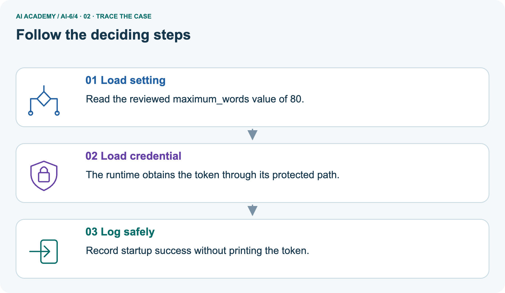
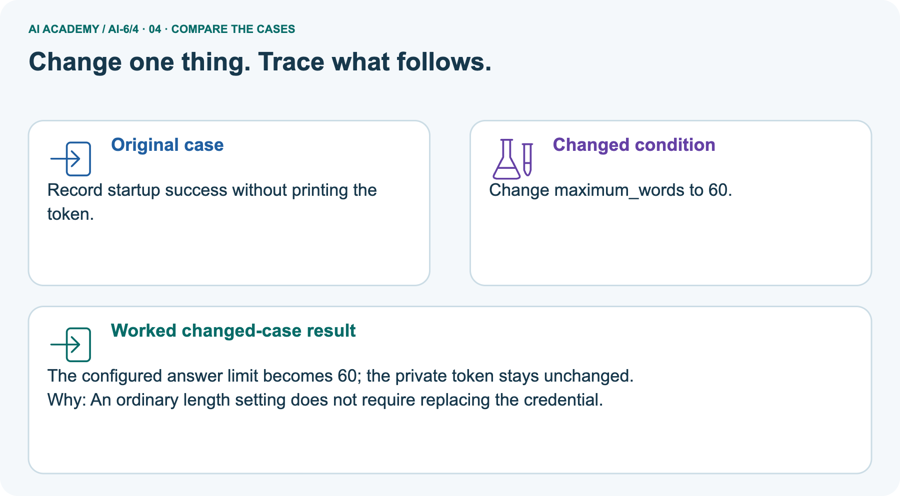
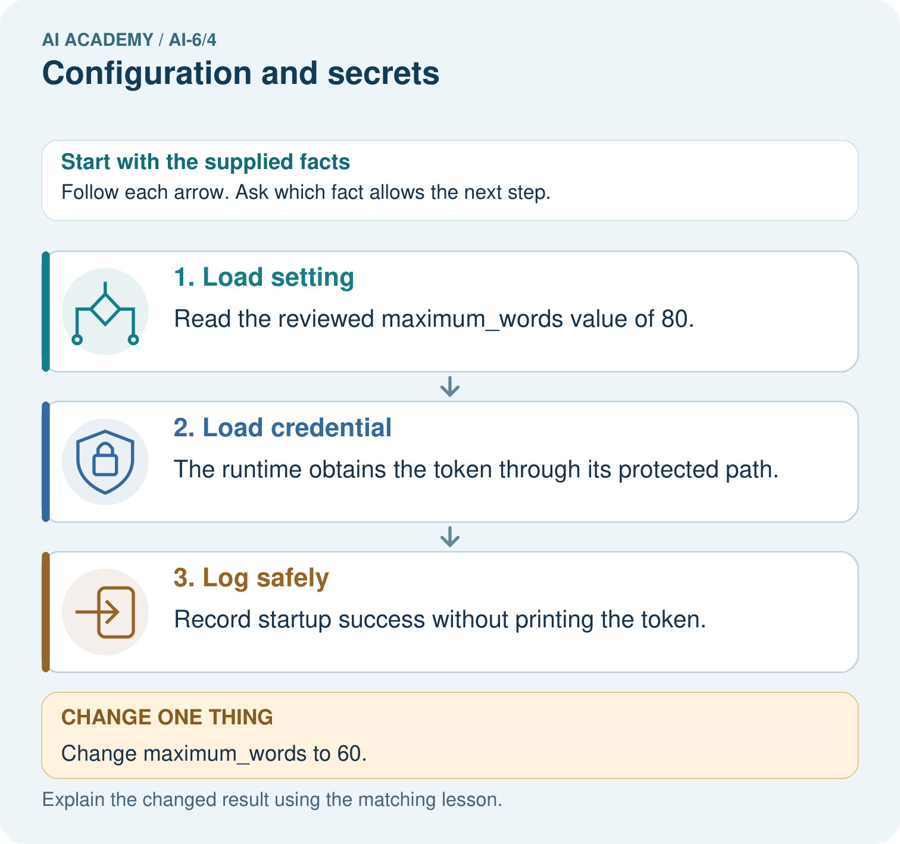
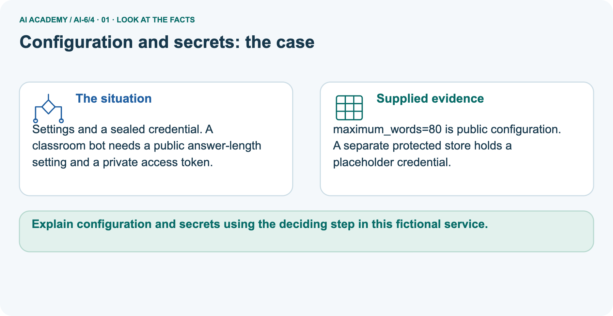
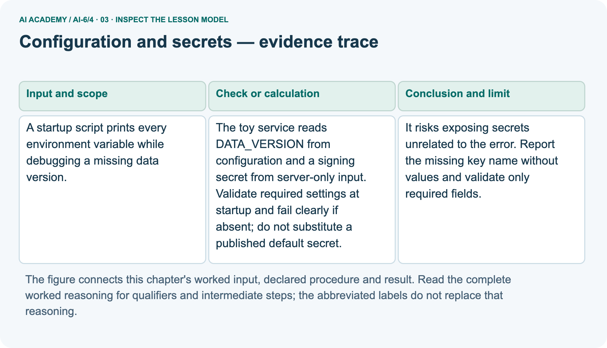
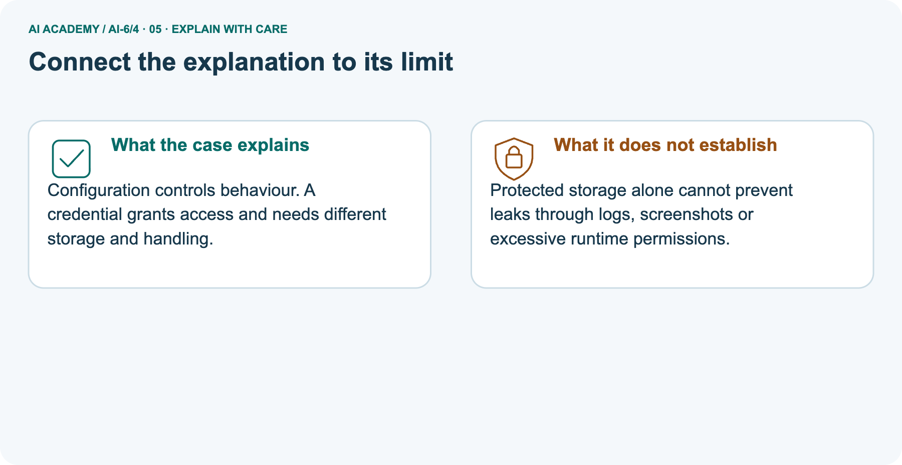
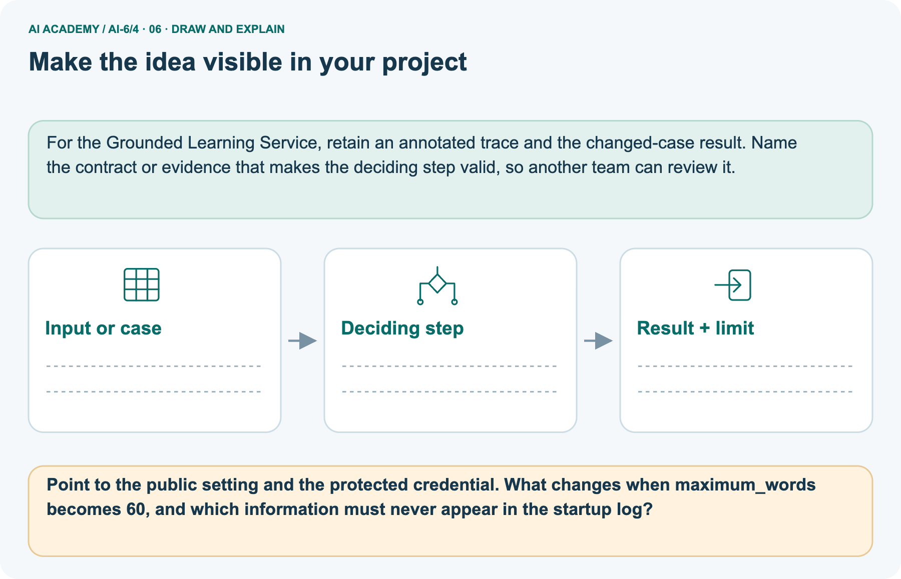

AI Academy · Level 6 · Grade 11 · Week 4 · Student lesson
Configuration and secrets
Learn to understand, design, build, test and explain AI systems responsibly.
Project: Grounded Learning Service
THE CONNECTED WEEK
Classify the value. Validate what is required. Choose what is emitted.
Separate public configuration from mock server-only inputs and diagnose missing settings without dumping privileged values.
Keep one habit: Input/output contract → startup flow → debug mistake → setting-change picture → probe table → mock audit → independent browser error.
Main lesson · Section 1
Load the settings you need without publishing privileged values
Separate reviewed public configuration from server-only credentials.
Learning goals
I can explain the mechanism and terminology of configuration and secrets.
I can apply the stated procedure to a new case with a traceable result.
I can identify an assumption or limitation and design a revealing follow-up.
Retrieve validation and service boundaries
Close your notes first. A rough first answer helps us choose the right starting point; it is not a score for your ability.
Without opening the old lesson, explain one key idea from Typed contracts and schemas. Give an example and a mistake that the idea helps you avoid.
Without opening the old lesson, explain one key idea from Requirements and service boundaries. Give an example and a mistake that the idea helps you avoid.
After trying, check the relevant lesson or ask your teacher. Change the part of your explanation that the evidence shows was wrong.
Prerequisite and starting response
Recall Typed contracts and schemas. Explain why a recorded result needs its input conditions and evidence source before it can support a claim.
End goal
Explain configuration and secrets using the deciding step in this fictional service.
Earlier wording, alternatives and picture transcripts
Your learning target
Remember before reading
This week you will practise:
Explain the mechanism and terminology of configuration and secrets
Apply the stated procedure to a new case with a traceable result
Identify an assumption or limitation and design a revealing follow-up
Retrieve what you already know
This week’s end goal
Main lesson · Section 2
Decide which values are public before designing the log
A setting and an access credential need different handling.
Start with the card-and-key analogy
Imagine a classroom machine with an instruction card and a locked access key. The card can say which lesson-data version to use and how long an answer should be. The key grants privileged access and belongs on a protected path. If the data-version setting is missing, the machine can name the missing setting without displaying every value it can access.
In this lesson both the settings and the private values are invented placeholders.
Define configuration and secrets
Configuration supplies non-secret settings; secrets provide privileged values. Keep secrets out of source, logs and client responses.
Complete local startup contract
| Input or record | Declared role and rule |
|---|---|
| DATA_VERSION | Reviewed non-secret configuration: nonblank string |
| MAX_WORDS | Reviewed non-secret configuration: exact positive integer, bool excluded |
| SIGNING_SECRET | Server-only mock input: nonblank placeholder; never copy its value into emitted records |
| Missing/invalid required field | Block startup and report the key name, not its value |
| Successful public record | Only status, data_version and maximum_words |
| Internal runtime state | May carry the placeholder separately; never print or serialize that state in the lab |
| Actual operations | No real environment, credential store, signing, model answer or deployment is used |
Name supplied and missing evidence
Earlier wording, alternatives and picture transcripts
Begin by writing the question the procedure is intended to answer. Identify the information already supplied, the information it will produce and the information still missing.
These are constructed classroom examples; they do not require live accounts, private records or an external service. Do not treat a plausible explanation as a measured outcome.
Main lesson · Section 3
Report the missing setting rather than dumping every input
Fail clearly before startup proceeds with an invented credential.
Original data-version and server-only-secret mechanism
The toy service reads DATA_VERSION from configuration and a signing secret from server-only input. Validate required settings at startup and fail clearly if absent; do not substitute a published default secret.
Complete startup and output flow
Check required values, then build a separate public record
State the declared contract before tracing
Before applying the procedure, write its units, denominator or decision boundary where relevant. A partner should be able to repeat each step using the same inputs.
If a required input is absent or violates the stated contract, record that condition explicitly instead of quietly replacing it with a convenient value.
Explain the visual
Point to the input, the deciding step and the result in this week’s visual. Explain the same step in ordinary words. A picture helps when you can say what each part represents.
Earlier wording, alternatives and picture transcripts
Configuration and secrets — evidence trace
Connect the picture and the explanation
Main lesson · Section 4
Change a public setting without changing the credential
Predict the configured value and the permitted output fields.
Current task and response
A startup script prints every environment variable while debugging a missing data version. Show the intermediate steps and give the conclusion with its scope.
Predict the changed word-limit picture
Change: Change maximum_words to 60.
Check after predicting
Prediction: The configured answer limit becomes 60; the private token stays unchanged.
Reason: An ordinary length setting does not require replacing the credential.
Earlier wording, alternatives and picture transcripts
Compare a familiar case with a changed case
Change one thing in the pictured case
Main lesson · Section 6
Keep diagnostics useful and private values off the display path
A successful load and a leak-free complete system are different claims.
Main debug-output mistake and bounded repair
A startup script prints every environment variable while debugging a missing data version.
It risks exposing secrets unrelated to the error. Report the missing key name without values and validate only required fields.
Keep the reasoning’s scope
Compare the intermediate evidence with the final statement. Explain why each number or decision follows from the stated inputs.
The conclusion belongs to this scenario and procedure; changing the inputs, evaluation population or authority can change what it establishes. Retain the raw record so a later revision can be compared honestly.
Separate pictured settings and placeholder
Settings and a sealed credential. A classroom bot needs a public answer-length setting and a private access token.
maximum_words=80 is public configuration. A separate protected store holds a placeholder credential.
The main failure is a debug script that prints every environment value while diagnosing a missing DATA_VERSION. Replace that output with a missing-key-name record. The picture separately sets maximum_words to 80 with a placeholder credential on a protected path. Changing the configured limit to 60 changes the reviewed setting; it does not require changing the credential.
Our local code records that setting only: no answer is generated, so enforcement of an actual response length has not been measured.
Trace public setting, private path and startup record



Read the picture one step at a time
Configuration controls behaviour. A credential grants access and needs different storage and handling.
Predict changing 80 to 60
Change one thing: Change maximum_words to 60. Predict the result before checking the explanation. What remains the same?
Check after predicting



Explain what stays private and remaining leak paths
Protected storage alone cannot prevent leaks through logs, screenshots or excessive runtime permissions.
Read the labelled picture: Point to the public setting and the protected credential. What changes when maximum_words becomes 60, and which information must never appear in the startup log?
Earlier wording, alternatives and picture transcripts
Learn from the worked case
Cover the result before checking it. Say what is given, choose the procedure, and follow one step at a time. Then uncover the result and explain your first mismatch. Ask why a step is allowed, not only what number it produces.
A pictorial worked case: Configuration and secrets
The facts we will use



Why this result follows
What this example does not establish
Main lesson · Section 7
Test missing settings and inspect emitted records
A protected input path is only one part of correct handling.
Core classroom-mock qualification
A classroom mock is not a production credential-management design; no real secrets are needed here.
A useful check asks what would make the reasoning fail. Distinguish a failure to execute the declared procedure from a weakness in the procedure itself.
The first may require a correction; the second requires an explicitly revised method and new evidence. Preserve unsuccessful cases so an improved result cannot hide the original problem.
Complete startup, type and disclosure probes
| Complete mock probe | Expected record or scope |
|---|---|
| DATA_VERSION classroom-v1; MAX_WORDS 80; placeholder present | ready; public version and limit only |
| DATA_VERSION missing | startup_blocked; missing_or_invalid [DATA_VERSION], without input values |
| Server-only placeholder absent | startup_blocked; missing_or_invalid [SIGNING_SECRET], without a default |
| MAX_WORDS True, zero or a quoted number | startup_blocked under the exact positive-integer rule |
| Limit changes 80 → 60 | Public configured limit changes; placeholder unchanged |
| Unrelated mock private value exists | Never iterate/dump it into the public/error record |
| Private store exists | Does not by itself prevent leaks in other logs, screenshots or code paths |
| Real credentials or deployment | Outside this mock; no real secrets or external operations needed |
Guided explanation and repair
A report omits this qualification: A classroom mock is not a production credential-management design; no real secrets are needed here.
Explain how omitting it could change a reader's interpretation, and write an accurate replacement.
Earlier wording, alternatives and picture transcripts
Locate the earliest unsupported step
Main lesson · Section 8
Practise naming the needed setting and safe diagnostic
Keep key names distinct from their privileged values.
Current explanation and guided scope check
Explain the weekly mechanism in your own words. Use the worked scenario to name its input, decision rule and output.
Supported W2 record
Use workbook W2 for the connected example “Configuration and secrets”. First fill the input and rule boxes. Try the middle steps before asking for a hint. After a hint, try the next step yourself.
| Plan | Do | Check |
|---|---|---|
| What is given? Which rule or procedure applies? | Record each intermediate step. | Does the result follow? What remains unknown? |
Explain your trace to a partner. Your partner points to one step to check. Swap roles on the next case. Each person writes their own explanation.
Individual mock-versus-production check
Use the worked case for Configuration and secrets. Proposed explanation: “The worked result establishes every future case”. Decide whether this explanation is supported.
Point to the step or supplied fact that decides; explain your repair if needed.
Answer on your own before discussion. If you are unsure, say which step you need help with.
Pictured public/private distinction
Point to the public setting and the protected credential. What changes when maximum_words becomes 60, and which information must never appear in the startup log?
Reserve the independent browser-error case
This is supported practice. Keep the separately named independent case for an attempt before feedback.
Earlier wording, alternatives and picture transcripts
Practise with less help: Trace the worked case
Check your reasoning
Explain the picture
Main lesson · Section 9
Run a complete mock startup and output audit
Use only the supplied fictional placeholders and record exactly what the checks cover.
Current debug-output investigation
A startup script prints every environment variable while debugging a missing data version. Show the intermediate steps and give the conclusion with its scope.
Complete runnable mock startup
"""Mock dictionaries only: never read real environment variables or credentials."""
import json
def startup(config,server_only):
invalid=[]
version=config.get('DATA_VERSION')
maximum=config.get('MAX_WORDS')
secret=server_only.get('SIGNING_SECRET')
if type(version) is not str or not version.strip():invalid.append('DATA_VERSION')
if type(maximum) is not int or maximum<=0:invalid.append('MAX_WORDS')
if type(secret) is not str or not secret.strip():invalid.append('SIGNING_SECRET')
if invalid:
return None,{'status':'startup_blocked','missing_or_invalid':invalid}
internal={'data_version':version,'maximum_words':maximum,'signing_secret':secret}
# Construct a new allowlisted public record, never serialize internal state.
public={'status':'ready','data_version':version,'maximum_words':maximum}
return internal,public
config={'DATA_VERSION':'classroom-v1','MAX_WORDS':80}
mock_private={'SIGNING_SECRET':'fictional-placeholder-not-a-real-credential',
'UNRELATED_SECRET':'unrelated-fictional-sentinel'}
internal,public=startup(config,mock_private)
_,missing=startup({'MAX_WORDS':80},mock_private)
_,absent_secret=startup(config,{})
_,changed=startup({'DATA_VERSION':'classroom-v1','MAX_WORDS':60},mock_private)
assert public=={'status':'ready','data_version':'classroom-v1','maximum_words':80}
assert missing=={'status':'startup_blocked','missing_or_invalid':['DATA_VERSION']}
assert absent_secret=={'status':'startup_blocked','missing_or_invalid':['SIGNING_SECRET']}
assert changed['maximum_words']==60 and internal['signing_secret']==mock_private['SIGNING_SECRET']
serialized=json.dumps([public,missing,absent_secret,changed])
assert all(value not in serialized for value in mock_private.values())
assert set(public)=={'status','data_version','maximum_words'}
print('Public startup record:',public)
print('Missing version:',missing)
print('Absent server-only placeholder:',absent_secret)
print('Changed public length setting:',changed)
print('Mock private values absent from every emitted record:',True)
print('No credential store, signing, rotation, deployment or real environment access is implemented.')
Expected records, missing-value checks and limits
Predict the public and blocked-startup records before running or tracing. The script takes supplied mock dictionaries and never reads your computer’s environment. It validates required values, refuses a missing placeholder instead of inventing a default, and constructs a separate public record from reviewed non-secret settings.
It checks that both tested mock private values are absent from every serialized emitted record; it never prints internal state. A successful mock does not establish credential strength, real protected storage, rotation, all possible leak paths or actual answer-length enforcement. Keep those claims outside the observed evidence.
Evidence ledger and reflection
| Record | Your evidence |
|---|---|
| Given input and fixed rule | |
| Prediction before checking | |
| Actual result, or “not run” | |
| First mismatch and one explanation | |
| Boundary or missing input and expected response |
On paper, trace the supplied procedure. If code is provided, predict before running it in a local practice file. Never write an expected answer as though it were an observed run.
Before trying: what do I expect, and why? While trying: which step could first go wrong? Afterwards: what did I actually observe, and what should change? Keep “not run” if you only traced the procedure.
Earlier wording, alternatives and picture transcripts
Predict, investigate and preserve the evidence
Plan → try → check
Main lesson · Section 14
Try alone: diagnose a value exposed through a browser error
Apply the public/private boundary to a different output channel.
Complete independent browser-error scenario
Server secret exists, but a browser error includes its full value. What failed and what record should be produced instead?
First attempt and support record
Attempt this case before feedback. Record any help. Earlier examples below are further practice; a case already practised with feedback cannot establish fresh transfer.
Feedback after trying
Attempt the independent case before hints. Record whether you worked alone, used a hint or followed a model. After feedback, fix the first unsupported step and explain why it changed.
A later check uses a changed case, not a copied answer.
Earlier wording, alternatives and picture transcripts
Independent case: Apply a new case independently
Attempt this without hints
Server secret exists, but a browser error includes its full value. What failed and what record should be produced instead?
Record support used: none, hint or teacher explanation. After feedback, a different case is needed to demonstrate independence.
Use feedback to improve
Main lesson · Section 11
Save the configuration contract and output-field policy
Keep public settings, required private inputs and redacted diagnostics distinct.
Project task and artifact
Add a labelled configuration and secrets evidence sheet to Grounded Learning Service. Show how you can explain the mechanism and terminology of configuration and secrets.
Use the supplied fictional case and keep its inputs, intermediate steps, calculation or prediction, and limitation. Connect this record to last week’s record; a matching answer without a trace is insufficient.
| Project evidence | Record |
|---|---|
| Component and version | |
| Inputs permitted at prediction time | |
| Trace and comparison with earlier work | |
| Failure, limit and human review |
Actual run or trace and limitations
For the Grounded Learning Service, retain an annotated trace and the changed-case result. Name the contract or evidence that makes the deciding step valid, so another team can review it.
Earlier wording, alternatives and picture transcripts
Evidence for your project
Main lesson · Section 16
Finish with a clear startup requirement and a bounded result
Report missing keys without displaying privileged values.
Retrieve and explain
Close your notes. Explain this goal in your own words: Explain the mechanism and terminology of configuration and secrets
Plan a changed-case return
If you are unsure, return to the worked picture and explain one arrow. If you are ready, change an input or assumption and justify your prediction.
Save your workbook evidence. At the next review, try a different case before opening your old answer.
Reference bank and extra practice
Choose the reference that helps your next step.
Reference · Use service vocabulary precisely
Reference · Section 5
Reference · Use service vocabulary precisely
Connect each term to an input, operation, evidence source or outcome.
Vocabulary and your explanation
| Word | Meaning |
|---|---|
| Secret | A value whose disclosure can grant privileged access |
| Configuration | Declared settings controlling operation |
| Redaction | Removing sensitive values from displayed or recorded output |
Extra challenge · Explain a stronger case
Reference · Section 10
Extra challenge · Explain a stronger case
Choose the next challenge after the main route.
Explain,repair and extend
Explain the weekly mechanism in your own words. Use the worked scenario to name its input, decision rule and output.
A report omits this qualification: A classroom mock is not a production credential-management design; no real secrets are needed here.
Explain how omitting it could change a reader's interpretation, and write an accurate replacement.
For the worked scenario, propose one additional case that could reveal a failure, describe its expected outcome before running it, and explain what would need to remain fixed for a fair comparison.
Do not reuse W4 as a new final test after receiving feedback.
Explain → apply → challenge
Reference · Check the service reasoning and its limits
Reference · Section 12
Reference · Check the service reasoning and its limits
Use after practice; keep the selected independent case for its first attempt.
Current explanation and response
Complete the supported workbook tasks before attempting W4 independently. Record any hints or help used. After feedback, use the teacher's fresh retry rather than copying the earlier answer.
For a project, select a relevant new case, predict the outcome from the declared rule and preserve the result alongside any revision.
For the worked scenario, propose one additional case that could reveal a failure, describe its expected outcome before running it, and explain what would need to remain fixed for a fair comparison.
Do not reuse W4 as a new final test after receiving feedback.
Extra practice · Revisit the complete trace
Reference · Section 13
Extra practice · Revisit the complete trace
Predict before reading the supplied steps.
Complete trace and evidence
Complete evidence record
Configuration and secrets — evidence trace
Follow the input through the stated procedure to its result. Cover the result first, predict it, then explain every intermediate step. The text/table accompanies the figure so the example can be read without colour.
Reference · The earlier route checklist
Reference · Section 15
Reference · The earlier route checklist
Use one main route rather than repeating the lesson.
Targets,route and first prediction
Start with this question: Settings and a sealed credential. A classroom bot needs a public answer-length setting and a private access token.
| By the end, I can | How I will show it |
|---|---|
| Explain the mechanism and terminology of configuration and secrets | Explain the deciding step, show a trace or test, and state one limit. |
| Apply the stated procedure to a new case with a traceable result | Explain the deciding step, show a trace or test, and state one limit. |
| Identify an assumption or limitation and design a revealing follow-up | Explain the deciding step, show a trace or test, and state one limit. |
Remember → watch and explain → try with help → investigate → try independently → keep project evidence. Your teacher may spread this lesson across several classes.
Keep your first prediction. Compare it with what the evidence shows and explain any change.
Extra practice · Predict,check and repair
Reference · Section 17
Extra practice · Predict,check and repair
Keep supported feedback separate from the independent case.
First supported question and optional hint
Settings and a sealed credential. A classroom bot needs a public answer-length setting and a private access token.
Which labelled step matches this detail? Record startup success without printing the token.
1. Load credential
2. Log safely
3. Load setting
Hint if needed: Read the steps in the pictorial case. Match the supplied detail to the stage that performs or records it.
Practice 1: explain the deciding evidence
Check after the first attempt
After your attempt, compare with the supported explanation: Log safely Record startup success without printing the token. Configuration controls behaviour. A credential grants access and needs different storage and handling.
Changed-case question and optional hint
Changed-case practice: Change maximum_words to 60. Which conclusion is supported by the supplied facts?
1. This one example guarantees correct results for every future input.
2. The configured answer limit becomes 60; the private token stays unchanged.
3. We can decide the result without examining the changed input or the procedure.
Hint if needed: Use the changed condition and the deciding step in the pictorial trace. The answer must say what follows from those facts.
Practice 2: explain the deciding evidence
Check after the changed attempt
After your attempt, compare with the supported explanation: The configured answer limit becomes 60; the private token stays unchanged. An ordinary length setting does not require replacing the credential.
Repair and retain the record
Review Typed contracts and schemas (ai-6/3). Goal: Explain the mechanism and terminology of typed contracts and schemas. Short practice: Compare A’s count 4 with B’s count "4".
Which record passes, which gate rejects B, and why does changing A’s count to -1 create a different failure?. Return to this week and explain what you changed.
Review Requirements and service boundaries (ai-6/1). Goal: Explain the mechanism and terminology of requirements and service boundaries. Short practice: Split the museum visitor’s request into two operations.
Which can the service perform for P, and what happens to each operation when Q has no approved card?. Return to this week and explain what you changed.
Use Download completed work in the hosted lesson to export your answers, reflections, practice feedback and code-run evidence. Open the HTML copy to read or print it.
Drafts stay in this browser when storage is available; clear drafts on a shared device.
Earlier wording, alternatives and picture transcripts
Use this supported practice once, in the browser or on paper. Keep the reserved independent assessment for a separate first attempt before teacher feedback.
Repair a missing building block
Keep your completed work
Reference · Six-picture concept journey
Reference · Section 18
Reference · Six-picture concept journey
Choose the picture that supports the current explanation.
01. Configuration and secrets: the case



Settings and a sealed credential. A classroom bot needs a public answer-length setting and a private access token. Supplied facts: maximum_words=80 is public configuration.
A separate protected store holds a placeholder credential.
Point to the given fact that matters most. Explain why it matters.
02. Follow the deciding steps
Load setting: Read the reviewed maximum_words value of 80. → Load credential: The runtime obtains the token through its protected path. → Log safely: Record startup success without printing the token.
Point to each numbered stage and explain which recorded input it uses.
03. Configuration and secrets — evidence trace



Configuration and secrets — evidence trace.
A startup script prints every environment variable while debugging a missing data version. | The toy service reads DATA_VERSION from configuration and a signing secret from server-only input.
Validate required settings at startup and fail clearly if absent; do not substitute a published default secret. | It risks exposing secrets unrelated to the error.
Report the missing key name without values and validate only required fields.
Read the labels and values. Explain the relationship the model shows.
04. Change one thing. Trace what follows.
Original case: Record startup success without printing the token. Changed condition: Change maximum_words to 60. Expected result: The configured answer limit becomes 60; the private token stays unchanged.
Reason: An ordinary length setting does not require replacing the credential.
Predict before checking the worked changed-case result. Name what changed and what the supplied facts allow you to conclude.
05. Connect the explanation to its limit



Configuration controls behaviour. A credential grants access and needs different storage and handling. Limit: Protected storage alone cannot prevent leaks through logs, screenshots or excessive runtime permissions.
Explain the case, then point to a limit on the claim.
06. Make the idea visible in your project



For the Grounded Learning Service, retain an annotated trace and the changed-case result. Name the contract or evidence that makes the deciding step valid, so another team can review it.
Draw your input, deciding step, result and limit. Supported question: Point to the public setting and the protected credential.
What changes when maximum_words becomes 60, and which information must never appear in the startup log?
Draw your project trace and justify the deciding step using evidence.